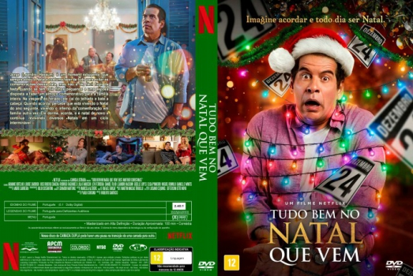

Serra Pelada (2013)


A lenda da montanha de ouro.

Avaliação (TMDb):


6.8/10 (43 votos)
Avaliação (Usuário):
País:Brazil, 120 minutos
Idiomas falados:Português
Gênero(s):Drama, Western
Diretor(s):Heitor Dhalia
Codec:MPEG-2 (DVD)
Número: 5014
Sinopse:
Juliano e Joaquim são grandes amigos que deixam São Paulo com destino à Serra Pelada, o maior garimpo a céu aberto do mundo, localizado no estado do Pará. Sonhando com a riqueza, a vida dos dois muda por conta de violência e ganância.
Elenco:
Juliano Cazarré, Júlio Andrade, Wagner Moura, Matheus Nachtergaele, Laura Neiva, Sophie Charlotte, Jesuíta Barbosa, Silvero Pereira
Tipo de mídia: DVD R/RW,
Legendas: Inglês, Português, Sem Legendas
Alugado: Não
Tela: Anamorphic Widescreen